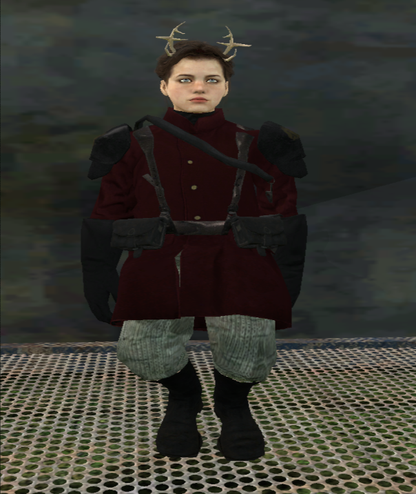
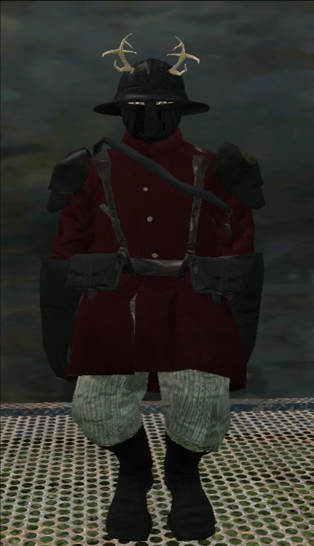

| SUPPLICANT | ACTION |
|---|
| NAME | TIME(s) | SANCT | PURGE |
|---|
| NAME | Anura Croix | STRAIN | Abhuman [Beastfolk] |
|---|---|---|---|
| WORLD OF ORIGIN | Vaxanide — Vaxanhive Underhive | SECTOR | Calixis |
| SEX | Female | AGE | 25 Terran standard |
| PRIOR POSTING | Scintillan Fusiliers — auxilia labour & battlefield medicae | TENURE | Approx. 1 standard year, records incomplete |
| SANCTIONED STANDING | |||
| Abhuman strain recognised under Imperial sufferance. Retained for medicae utility. No writ of censure on file at time of transcription. | |||

DROP portrait_1.png BESIDE index.html');">
DROP portrait_2.png BESIDE index.html');">| HEIGHT | 6’3” — 6’6” at full leg extension | MASS | 81–85 kg |
|---|---|---|---|
| EYES | Cloudy blue | HAIR | Light brown |
| GROOMING | Worn in a regulation military bun, parted to sit clear of the antler bases. | ||
Thin of frame for her height. The profile is broadly humanoid save for the keratin growths rising from the skull to form a set of antlers — uncommon among beastfolk strains, though not unheard of. The lower body is digitigrade in bone structure and heavily furred, brown in colour, matching the rest of her body hair. The legs terminate in a pair of keratinous hooves rather than feet.
The increased muscle and tendon strength in the legs makes her exceptional over long distance at speed, and lends her a standing leap somewhat beyond an unaugmented human. The same structure makes her an abysmal climber on tall or steep terrain, a deficiency the leaping partially offsets.
| ITEM | COST | NOTATION |
|---|---|---|
| M35 “M-Galaxy” Pattern Lasgun | 3 Thrones | Far more familiar with the severely outdated Mars Pattern Mark II, kept in stockpile purely for cheapness. The newer universal standard, long since routine to other regiments, is a recent thing in her hands. |
| Chainmail [Modified] | 2 Thrones | Thin thermal underlayer against chafe and cold, plain white undershirt and thin trousers over it. Cheaply produced chainmail leggings and hauberk above that — her only real armour. Draped over the whole, a drab red smock and worn leather shoulder pads bearing a simple unit insignia. |
| Medical Kit | 3 Thrones | A wooden crate lashed to her back with makeshift straps, emblazoned with the mark of the Officio Medicae. Whether it was properly requisitioned or simply taken is not established. Her comrades did not enquire while bleeding. |
Unfortunately so, some cog positions spare you from the horrors of the wider world and universe more than others, and no lot in life is quite equal. Thus we find ourselves on the lowest rungs of living, situated at the furthest edges of the Calixis Sector, nestled on the frontier world of Vaxanide, buried under the towering habs and manufactorum facilities of the central Hive Vaxanhive. Deep within the underhive the undesirables, the unwanted, the outcast, and the worst of society find themselves left to fester and fend for themselves in some of the worst conditions possible.
To be born within the underhives is almost a near guarantee of a life of suffering. Even worse so is to be born here an Abhuman — the mutated vestiges and relatives of humanity, or those unlucky enough to be so genetically modified they can’t even be considered properly human anymore. No matter the circumstance of how you came to be, no matter what purpose or role you may fulfill, your life from birth is immediately viewed as less than that of a true pure human. To most of those around you, you are nothing more than slave labour, cannon-fodder, or food for rats in the gutter.
It’s because of these unfortunate coinciding facts of life that after years of being on the brink of constant starvation whilst enduring mandatory hard labour from the second you’re able to barely hold a tool in your hand, that when the opportunity for a way out of the hive appears, those who just barely meet the requirements — or are at least human-looking enough to be accepted — jump at the chance to join the Guard. None the less the pride and joy of the Sector Capital Scintilla, the famous Scintillan Fusiliers. Naively unaware that you and your body are to be nothing more than cannon-fodder for the nobles of the regiment whilst you live, and a glorified sandbag for the frontlines when you inevitably perish.
“This is the shared tale of many I knew and of myself I suppose, yet here I remain unlike them. Perhaps out of luck or pity from whatever watches over our souls — whether it be the God-Emperor or something worse — my path diverged from the rest of my lot soon after we departed from the depths of the underhive we called home. We expected change, a better quality of life. We hoped this would be a new opportunity for all of us lucky enough to join up; after all, anything was better than the depravity and danger of the underhive in our minds. Unfortunately we were naive to the horrors and real dangers that lurk beyond the walls and habs of the Hive that we were born within.”
“The Calixis Sector was plagued with a monumental amount of threats that we were all too soon to be introduced to. There is always a shortage of bodies on the frontlines and someone has to fill the position. Within two weeks of our departure I watched as gutter rats and ‘friends’ I grew up around who had followed suit with me were whipped into shape to be proper ‘soldiers’ of the Imperium at large. This training consisted mostly only of what could be found in the surface-level pages of the Guard Primer — not far off from the poor excuse of training that our noble counterparts received, with the exception of our equipment.
While they were afforded every luxury possible and the newest of wargear, we were made to make do: cheaply forged flak, leather padding, mass-produced primitive chainmail to layer underneath your garb, reclaimed and ‘reserviced’ autoweapons and patterns of lasgun from long before our time. This was the standard of ‘quality’ that we received. Not even spared the luxury of being allowed to wear and brandish the colours of House Vaxanide or House Hax into battle; instead we were fitted with drab red uniforms, the only good feature being the fact that if you were splattered in your comrades’ blood or your own you didn’t have to be bothered to wash it out — if you lived long enough to clean it, that is.”
“From that point onward our service began, and we followed along with the pride of Scintilla wherever they travelled, acting mostly as assistants and labourers still, as the Fusiliers sought out whatever battles brought them the most glory for the least amount of effort. For most of us this was still a blessing compared to the work in the manufactorums day and night, yet the looming threat of death and danger was never far off even with our relatively safe regimental travels and duties within the Calixis Sector.
Even with all their money not every fight could be avoided or cherry-picked to suit their preferences. There were still sieges prolonged by enemy forces and worlds to be protected at every waking hour, and if things ever seemed out of the nobles’ favour we were the first resource to be expended — bodies to be thrown at the problem till it was softened up enough for the nobles to mop up.”
“Push forward. It’s all I could do as I watched those I knew and ‘trained’ with be gunned down in service of the Imperium, dying in place of high-born lords and nobles who watched and took pot shots from the rear lines as we cleared a path for their victories. Of course no glory or reward could be granted to beast and lowborn except the opportunity to fight once more and trudge through another day.
Other than that, I could count the number of opportunities and pieces of knowledge joining the Guard gave me on one hand: how to avoid dying the first minute into a firefight if possible; how to know when a fight is lost before it even reaches its end; how to fortify a trench or position with whatever is on hand; how to laugh even in the most awful of circumstances, even if it’s laughing at how I could let myself end up in a situation; and last but not least, how to read and write. Thanks and praise to the highborn of our regiment for the last one I suppose — if they weren’t so lazy as to need assistants to handle most of their simple forms or duties for them, I would probably not be able to write any of this down or understand more than a few basic written words.”
“And as the number of faces I remembered from my original recruitment dwindled, all I noticed is that I kept getting better at scraping by and making it out of horrible situations. I even managed to pick up the skills to pull a couple of others through with me at times. I’m certainly no trained professional, but being in combat so long you pick up a bit of medical knowledge to keep yourself and others from bleeding out or dying in a trench or battlefield. It’s a suitable niche for me anyhow — I suppose most pure humans refuse to touch or be touched by a beastfolk or other abhumans out of prejudice, so someone has to take care of the rest of us.”
“They say most in the Guard are lucky to make it past their first fifteen minutes. What does that say about me making it an entire year? Lucky me, I guess, although I don’t think it bodes very well. The Sector usually has its fair share of important people moving through it all the time, especially inquisitors, and talk of rogue traders on their way through to the unknown stars. But something’s been off recently. We’ve had more people than usual hanging around the regiments, like they’re watching and observing us for some reason or another unbeknownst to us.
I had a strange person approach me myself. They didn’t mention much more than an offer — an offer to do more than work at the feet of noblemen till I die. To do something greater. It’s tempting, but who knows. I could be in over my head.”
| PHYSICAL STATE | Serviceable. Chronic underfeeding in early life, no lasting deficit noted. | MENTAL STATE | Steady. Gallows humour recorded as a coping mechanism, not as instability. |
|---|---|---|---|
| COMPETENCIES | Battlefield medicae (self-taught), trench and position fortification, threat assessment, sustained running, literacy — acquired late. | DEFICIENCIES | Poor climber. No formal medical schooling. Treated with open prejudice by pure-human personnel, which limits her utility outside abhuman details. |
| LOYALTY | Assessed as standard. | WARP AFFINITY | None detected. Untested by sanctioned parties. |
[ ██████████ TERMS OF INTAKE SEALED — TOUCH THE RUNE TO INTERROGATE ] Subject approached at regimental muster by an agent operating under dynasty authority. Offer of transfer extended and accepted. Fusilier command raised no objection to the release of abhuman auxilia. Subject boarded under the Lord-Captain’s leave with wargear intact, including one medicae crate of contested provenance. No further enquiry into the crate is to be minuted.
| RECOVERY SOURCE | Private vox-memory fragment recovered from the subject’s disputed Officio Medicae crate. Timestamp falls within the missing year of Fusilier service. |
|---|---|
| INCIDENT TYPE | Trench assault, unit separation, probable first psychic manifestation. No surviving regimental witness statement located. |
| ARCHIVE STATUS | Never submitted to Fusilier command. No dynasty authorization token, captaincy seal, or sanctioned Psykana referral is present. This partition is absent from the normal archive index and appears to have been concealed rather than formally retained. |
| AETHERIC NOTE | Green ribbon-like warp discharge and abnormal awareness of nearby vermin are consistent with a Vermin Speaker manifestation. Subject appears not to have understood the phenomenon at the time. |
“I remember the whistle first. Not ours. Maybe theirs. Maybe one of the shell casings screaming over the line. By then it all sounded the same. The trench had stopped being a trench somewhere behind us and become a long ditch full of red water, broken boards, men trying not to drown face-down in mud, and officers shouting forward because forward was the only direction they knew.”
“We went over anyway. We always went over. The Fusiliers wanted the next line before dusk and people like us were cheaper than artillery. I made it maybe fifty metres before a shell picked the earth up and threw it back down on top of me. When I woke I was in a crater deep enough that the firing passed over the lip. My left ear only heard a thin whine. My lasgun had been folded against a slab of ferrocrete; the casing was split, the focusing assembly hanging out like a snapped bone. I tried the charge lever twice because you do stupid things when you’re frightened. It gave me sparks and nothing else.”
“I could not see the line anymore. I could not see anyone. But I could hear scratching.”
“At first I thought it was someone digging through the spoil. Then I realised it was underneath me. Little claws in the wet earth. Rats. Hundreds of them, maybe. The bombardment had driven them out of the trenches and into every hole that wasn’t already full of bodies. I hated them for being alive. I hated that I could hear them better than I could hear the men shouting above me.”
“Then I saw the field again.”
“Not from the crater. From somewhere close to the ground. Everything was enormous. Boots striking mud. Torn cloth dragging through puddles. A dead man’s hand with a ring on it. Another view blinked into mine and I was looking through a drainage pipe. Another, and I was under coils of wire. Another, and something was chewing leather from a corpse while the world shook around it. I shut my eyes and it did not stop. There were eyes everywhere, little black beads in the dirt, and for a few seconds every one of them felt like mine.”
Too many eyes. Too many places to hide. Too many things that could see her.
“That was how I knew the enemy was coming before I heard him.”
“He dropped into the crater hard enough to splash mud across my face. I remember his bayonet more clearly than his face. He saw the broken lasgun, saw the antlers, and whatever he thought I was, he decided I was easy. I tried to bring the weapon up like a club. He kicked it out of my hands. I remember thinking that I had survived the underhive, the Guard, a year of being used as a sandbag that could walk, and I was going to die in a hole because a piece of cheap issue metal finally gave up before I did.”
“I wanted him away from me. That was all. I did not pray. I did not say anything. I did not know there was anything listening.”
“Something green came out of the air between us.”
“They looked like ribbons at first. Thin strands, bright enough to paint the crater walls sickly green. They wrapped around his forearm and the bayonet went one way while the hand stayed clenched around it. More strands crossed his chest. His coat opened in straight wet lines, then the flesh beneath it followed. He had time to scream once before the ribbons pulled in opposite directions.”
“His skin came away in sheets. I saw white rib beneath it, clean for less than a heartbeat before another strand sawed through the gaps. Something hooked under his jaw and peeled the lower half of his face down against his throat. His tongue was still moving. His eyes were still looking at me. Then the green threads tightened again and what was standing over me stopped being shaped like a man.”
“It happened too quickly for the amount of blood there was. Pieces of him struck the crater wall hard enough to stick in the mud. One arm landed beside my knee. The rest folded apart in strips and chunks, pulled open as if invisible hands were trying to find something hidden inside him. Then the light vanished. No smoke. No heat. Just the smell of blood, burnt air, and all those rats suddenly going quiet.”
“I thought I had imagined it until Harl and Merek climbed over the lip.”
“They had been looking for me. Throne knows why. Maybe because I had patched Harl’s leg the week before. Maybe because Merek still remembered when there were more of us from Vaxanide. They stared at the thing in the crater. Then they stared at me.”
“Neither of them said witch at first.”
“They did not have to.”
“Everyone in the Imperium knows what happens next. You do not need a priest to explain the Black Ships. You do not need to know the words sanctioning, possession, pyre. We had all seen men beaten to death for less frightening rumours. We had all heard stories about people taken away because a candle guttered when they walked past it. I knew what Harl was thinking because I was thinking it too. If they told anyone, I was dead. If they were kind, I was merely dead.”
“Harl kept saying my name. Quietly. Like he was trying to remind himself I still had one. Merek reached for his rifle.”
“I moved first.”
“I still had the bayonet. The enemy’s hand was attached to it, so I had to wrench it loose. I wish I could say I don’t remember what happened after that. I remember all of it. I remember Harl asking me to stop. I remember Merek slipping on the crater wall. I remember how much easier it was to put a blade into someone when you knew exactly where the gaps in their kit were because you had helped buckle that same kit closed before an assault.”
“I remember apologising to Harl while I held him down.”
“I remember that being the worst part.”
“When it was finished, I dragged both of them against the other body and waited for the shelling to bury the difference. I told myself the guns would do it. The guns always cleaned up after us eventually. I told myself nobody would count three bodies in a crater when thousands were missing. I told myself they would have condemned me first.”
“None of that made them less dead.”
They saw you. You saw them. Now only you remain to remember.
“I stayed in that crater until night.”
“The assault moved past me. Then back over me. Then somewhere else. I could hear the rats again after dark. Worse, I could feel where some of them were. A pressure at the edge of thought. A hundred tiny lives moving through drainage cuts and under corpses, finding paths I could not see. Every time one looked toward the crater I had the sick feeling of being watched from inside my own skull.”
“There were other voices too. Not loud. Not like the preachers describe daemons. Nothing grand. Just little thoughts that arrived wearing my own voice.”
You survived. That makes it right.
They would have burned you.
You were always going to be alone.
Look again. There are so many eyes beneath the earth.
“I kept answering them even though I knew I had not spoken first. No. No. No. Harl had a sister. Merek snored loud enough to wake the dead. Harl hated recaf unless it was so sweet it hurt your teeth. Merek used to steal my ration bars and pretend the rats had taken them. They were people. They were mine. I killed them because I was afraid.”
“That truth was worse than the voices. The voices could be ignored for a few seconds at a time. The truth stayed.”
“Sometime before dawn a rat climbed onto Harl’s sleeve. I knew it was there before I turned my head. It looked at me. For one impossible instant I was looking back at myself from the sleeve — mud on my face, antlers black against the sky, three corpses around me, both hands clamped over my mouth because I was scared someone would hear me crying.”
“Then it ran.”
“I followed the direction it went when I finally left the crater. I do not know why. It found a drainage trench that led behind what remained of our line. I crawled most of the way. By sunrise I was back among the Fusiliers with somebody else’s rifle and a story about being buried by a shell.”
“No one asked about Harl or Merek until three days later.”
“I said I never saw them after we went over.”
“That is still the worst lie I have ever told.”
“The lie did not end anything. That is the part I think I expected it to do.”
“I thought if the words came out clean enough, if I looked tired enough, if I kept my hands from shaking while I said them, then the crater would remain where I left it. Harl and Merek would stay beneath the mud. The green light would stay beneath the mud. Whatever had looked out through all those little black eyes would stay there too. I would walk back into the trench, become one more filthy red coat among hundreds, and the war would be loud enough to drown the rest.”
“It was not.”
“They put me back to work before the mud on my coat had dried. We had too many wounded and not enough medicae hands, which meant no one cared where I had been so long as I could still tie a tourniquet and tell the difference between a man who could wait and one who could not. I remember washing someone else’s blood from my fingers in a ration tin. The water was brown, then red, then brown again. For a second I saw green moving through it in threads so thin I thought they were veins inside my own eyes.”
“I threw the water out. The orderly beside me asked what was wrong. I told him there was grit in it.”
“Another lie. Smaller. Easier.”
“That frightened me almost as much as the first one.”
It gets easier.
“I did not answer that one.”
“There was no proper sleep that night. There was barely a night. The sky went black, the guns kept firing, illumination shells made everything white again, and every time I began to drift off somebody screamed for a corpsman or a runner kicked my boot because another stretcher had arrived.”
“When I did close my eyes I could still see.”
“That is difficult to write without sounding mad.”
“I would put my forehead against my knees and there would be the inside of the dugout, dark and close, exactly as it should be. Then another image would slide across it. A crack beneath the duckboards. A drainage culvert half full of black water. A dead officer’s coat from the level of his boots. A crust of bread caught between two sandbags. I learned quickly that I could tell which sights were mine because mine were higher from the ground.”
“The others came low.”
“Always low.”
“Every time I felt one of those little borrowed sights open, my stomach turned. I would squeeze my eyes shut harder, as if I could close theirs by doing it. Sometimes that worked. Sometimes the view only sharpened.”
You do not have to look with your own eyes.
“I started counting shell impacts instead. One. Two. Three. Pause. One. Two. Three. Pause. If I knew when the next one was coming, then I had something real to wait for. Something ordinary.”
“Harl used to count them too.”
“That was when I cried for the first time.”
“Not in the crater. Not while I was holding him down. Not while I dragged him through the mud. It happened in a dugout full of sleeping men because I realised I had stolen even that from myself. I could not count the guns without remembering him tapping the rhythm on his helmet and getting the timing wrong on purpose until Merek threatened to throw a boot at him.”
“I bit down on my sleeve so no one would hear me.”
“The voices became clearer when I was tired.”
“Not louder. Clearer.”
“They never sounded like monsters. I think I could have handled monsters. Monsters are simple. You point a weapon at them. You run from them. You tell somebody else there is a monster and, if they believe you, at least the thing has a shape.”
“These sounded like thoughts I might have had if I were a little crueler, a little more frightened, a little more willing to forgive myself.”
Merek reached for the rifle.
Harl would have spoken eventually.
You knew where the blade had to go because you wanted to live.
Living is what you are good at.
“That last one nearly made me sick.”
“All my life I had thought surviving was the only thing about me worth being proud of. The underhive did not kill me. The manufactorum did not take a hand. Recruitment did not reject me. The Guard did not spend me in the first assault or the second or the tenth. I kept getting back up. I kept crawling out. People called it luck when they were being kind and stubbornness when they were not.”
“Now every time I thought about surviving, I saw Harl’s face underneath me.”
“I started wondering whether there was a point where survival stopped being a virtue and became something uglier. Whether there was a number of other people you could climb over before being alive at the end no longer counted as winning.”
“I did not find an answer. The trench did not care enough to give me one.”
“The next morning a replacement clerk wrote Harl and Merek down as missing. He asked me how to spell Merek’s surname because he had copied it wrong from the company roll.”
“I knew how to spell it.”
“I told him.”
“He corrected the letter, blew on the ink, and moved to the next name.”
“That was all the Imperium required to make them disappear.”
“I began writing their names where no one could find them.”
“Not on paper. Paper can be searched. Paper can be read. I wrote them with my finger in the condensation on the inside of my helmet. I traced them into the mud beneath my cot and smoothed it flat afterward. When I cleaned instruments I spelled each name in the order of the pieces laid out on the cloth. Harl. Merek. Harl. Merek. As if repetition could keep them people after I had turned them into a secret.”
“Sometimes I added the others. The ones from Vaxanide. The ones whose faces had already started to blur. I was frightened that if I forgot any of them, something else would remember in my place.”
We remember.
“That one did not sound like me.”
“I stood so quickly I hit my antlers against the roof brace. Nobody else woke. Somewhere behind the revetment I could hear claws moving through the wall.”
“I knew there were seven rats in the void behind the boards.”
“I knew it before I saw them.”
“I knew one was missing part of its tail. I knew another had something metallic between its teeth. I knew the smallest one was pressed flat because a larger one was crawling over it.”
“I told myself I had heard them. Beastfolk ears. Good hearing. Nothing more.”
“Then one squeezed through a gap near the floor.”
“It was carrying a brass uniform button.”
“Red enamel around the rim. Fusilier issue. There were thousands like it in the regiment. Tens of thousands, probably. It meant nothing.”
“There was dried blood in the groove around the back.”
“I stared at it until the rat dropped the button beside my boot.”
You left something behind.
“I crushed the button beneath the heel of my boot until the metal bent. Then I buried it beneath the duckboards with my bare fingers.”
“The rat watched the entire time.”
“After that I became afraid to sleep at all.”
“The first time exhaustion won, I dreamed I was back in the crater. Only it was quiet. No shelling. No shouting. No wind. Just Harl and Merek sitting opposite me with their backs against the mud wall like we were waiting for an order.”
“Harl had his mug of recaf. Merek had both boots. Neither of them were bleeding.”
“I knew it was a dream because they would not look at me.”
“I kept trying to apologise. Every time I spoke, mud came out of my mouth.”
“Then Harl lifted his head.”
“There were no eyes in his face.”
“I saw myself anyway.”
“Not reflected. Seen. From under his collar. From inside the crater wall. From beneath Merek’s sleeve. From the torn belly of the enemy soldier. Little points of sight opening everywhere until the whole hole was looking at me.”
“I tried to wake up.”
“I woke in another place instead.”
“For a few seconds I was running through a drainage pipe on four feet. I could smell rust, blood, wet cloth, cordite. The pipe opened near the old assault ground and I saw the crater from low to the earth. Half of one wall had collapsed. The bodies were mostly buried.”
“Mostly.”
“Harl’s hand was sticking out of the mud.”
“I knew it was his because I had bandaged two of those fingers after he caught them in an ammunition hatch months before.”
“Something moved beneath the hand.”
“Then I was in my cot again with my mouth open and no sound coming out.”
“I do not know if I dreamed the crater. I do not know if I saw it through another creature. I never went back to check.”
“Cowardice has saved my life more often than courage ever has.”
There are kinder words for it.
“I hated how gentle that sounded.”
“By the fourth night the trench itself began to feel sick.”
“That cannot be true, but it is how I remember it. Mist gathered in the communication trench even when the air above was clear. It crawled along the floor instead of rising. Every lamp halo looked green around the edges. Shadows from the revetment posts stretched too far when nobody was moving.”
“Once, while I was carrying dressings back from the aid station, I saw something thin curl around a sandbag at the edge of my vision. It looked like one of the green ribbons from the crater, only darker, almost black in the middle. I turned and there was nothing there.”
“I kept walking.”
“The next corner had three rats sitting in it.”
“They moved aside before I reached them.”
“I did not tell them to.”
“I did not.”
Of course not.
“I nearly screamed at that. Instead I laughed.”
“Quietly at first. Then hard enough that I had to lean against the wall. It was not funny. Nothing had been funny for days. But Merek used to laugh whenever things became too awful to take seriously, and for half a second it felt so much like him that I could pretend I had not killed the person who taught me how.”
“Then I remembered.”
“I stopped laughing so quickly my teeth hurt.”
“That was the pattern after. Grief, then fear. Fear, then guilt. Guilt, then exhaustion. Exhaustion, then the eyes. The eyes, then the voices. The voices, then grief again.”
“Round and round until I stopped being able to tell whether I was waiting for the war to end or merely waiting for a few minutes in which my own head would leave me alone.”
“The worst moment came when a wounded Fusilier grabbed my wrist.”
“He had shrapnel in his abdomen and was bleeding through two field dressings. I was trying to keep pressure on the wound when he opened his eyes and stared at me like he knew.”
“He said, ‘Don’t let me die.’”
“That was all.”
“For one heartbeat I was back in the crater with Harl beneath me.”
“My hands locked.”
“The man screamed. Somebody shouted at me to move. I nearly let go.”
“Then training, or habit, or whatever ugly little machine the Guard had built inside me started turning again. Pressure. Pack the wound. Keep him talking. Check the colour in his lips. Tell him the Emperor is watching even if you are not sure He is. Lie if the lie keeps the patient breathing.”
“He lived.”
“Everyone congratulated me like that was supposed to feel good.”
“I went behind the aid station and vomited until there was nothing left.”
You can save them.
You can open them.
“I hit my own head against the trench wall hard enough to see white.”
“The second thought stopped.”
“I do not know where it came from.”
“I still do not.”
“Eventually the line moved again.”
“That is what wars do. They grind people into a place until the place has enough of them, then somebody points at another patch of mud and says that one matters now.”
“We packed the aid station. We burned what we could not carry. We left the broken stretchers in a heap. The clerk folded the casualty rolls into an oilskin wallet. Harl and Merek were still listed as missing.”
“No investigation. No questions. No one important enough to ask them.”
“I should have been relieved.”
“Instead it felt like I had killed them twice.”
“Once because I was frightened of what they might tell someone.”
“Again because I had been right that nobody would care enough to find them.”
“That second death was quieter. I think that is why it hurt more.”
“Before we left, I stood watch alone for part of the last dark cycle. The guns were finally distant. I remember thinking that this must be what peace sounded like.”
“Then the rats beneath the boards all went still at once.”
“Every one of them.”
“I felt the silence before I heard it.”
“Something in the fog beyond the wire seemed to breathe.”
“A green line traced itself through the mist and vanished.”
Not over.
“I whispered a prayer to the Emperor. I do not remember which one. I might have invented it.”
“I asked for sleep.”
“I asked to wake up when there was nothing left to be afraid of.”
“Nothing answered.”
“After a while the rats started moving again.”
“I was grateful for the noise.”
“That may have been the first moment I realised I was more frightened of silence than I was of them.”
“I do not know what that says about me.”
We do.
“The fog came in before the withdrawal order reached our trench.”
“I know that because the wind was blowing east and the fog came west.”
“It did not roll across the ground the way mist should. It pushed. Slow at first, then in little breaths. Each one spilled another few metres over the wire and around the shell holes, stopped, and waited as if whatever made it was listening for the guns.”
“Nobody else cared. We were packing. Ammunition first. Dressings next. Burn the papers that could not travel. Leave the stretchers that had already broken. The officers were arguing about which company was supposed to cover the retreat and the wounded were arguing with anyone who tried to tell them they could not walk.”
“Then every rat in the trench began climbing out.”
“Not scattering. Not feeding. Leaving.”
“They came out of drainage cuts and corpse pits and gaps behind the revetment in a black-brown flood. Big ones. Small ones. One with only three legs. Another so fat it had to squeeze sideways beneath a duckboard. They ran over boots, ration tins, dead men, living men. They bit each other when one slowed the others down.”
“All of them were going the same direction.”
“Away from the fog.”
“I did not hear a word.”
“I felt one anyway.”
PREDATOR.
“My hands went cold.”
“Then the eyes opened.”
“One was beneath a cart. One beneath a dead artilleryman. One in a drainage pipe. One was running along the parapet with a strip of somebody’s sleeve in its mouth. They came so quickly I nearly fell over. Dozens of little lives, all trying to become distance.”
“And every one of them had seen something different.”
“Through one pair of eyes there were legs in the fog. Too tall. Too thin. They crossed a shell hole without stepping down into it.”
“Through another there was something crawling where the legs should have been.”
“Another saw Harl standing beyond the wire with his coat buttoned wrong.”
“Another saw Merek walking backwards.”
“Another saw nothing at all.”
“Nothing except footprints appearing in the mud one after another without anyone making them.”
“One rat stopped beneath a collapsed firing step and looked directly into the fog.”
“Its sight went black.”
“Not blood. Not pain. No teeth. No gunshot.”
“Just gone.”
“A second one did the same.”
“Then a third.”
“I tore myself out of them so hard I bit my tongue.”
“That was when I heard Harl say my name from beyond the wire.”
“Not loudly.”
“That would have been easier.”
“He said it the way he had in the crater. Quiet. Careful. Like my name was something fragile he was afraid of dropping.”
Anura.
“I knew he was dead.”
“I knew exactly where I had put the bayonet.”
“I knew how long it had taken him to stop trying to push me away.”
“I still turned toward the sound.”
“Merek laughed next.”
“That laugh almost got me over the parapet.”
“It came from somewhere low in the fog, too low for a man standing, then again from somewhere behind me, then from the drainage ditch on my left. Same laugh. Same ugly little hitch in the middle when he ran out of breath.”
We found you.
“I backed into the trench wall.”
You were frightened.
We know.
You wanted to live.
“I put both hands over my ears.”
So did we.
“That one hurt enough that my knees went out.”
“Mud soaked through my trousers. Somewhere behind me somebody shouted for another box of dressings. Somewhere ahead Harl was breathing in the fog even though I had felt his last breath against the palm of my hand.”
I forgive you.
“I stopped breathing.”
“For one stupid second I wanted it.”
“Not belief. I knew better than that. I wanted permission. I wanted someone wearing Harl’s voice to tell me the thing I could never make him say. I wanted the crater to close. I wanted Merek to laugh and call me an idiot and steal another ration bar. I wanted there to be a shape to all of this that ended somewhere other than my hands around a friend’s throat.”
You did what you had to.
You survived.
There is no sin in surviving.
“The voice was so gentle I hated it more than if it had screamed.”
“I remembered Harl trying to crawl away from me.”
“I remembered Merek reaching for the rifle.”
“I remembered that neither of them had forgiven me because I never gave them the chance.”
“So I said the only thing I had left that was mine.”
“You don’t get to forgive me for them.”
“The fog stopped moving.”
“Every rat I could still feel stopped with it.”
“Then something very far away, or very close, laughed without using Merek’s voice.”
“The first shell landed while everyone was still staring at the fog.”
“It hit the communication trench behind the aid station and folded half the revetment inward. The second struck the reserve traverse. The third did not explode. Nobody trusted that one.”
“Then the wounded started shouting.”
“A stretcher party had been caught on the wrong side of the collapse. Six men that I could see at first. Two bearers, four wounded. One of the wounded could walk if somebody held him upright. One could crawl. The others were whatever their bearers could drag.”
“The proper route back was gone. The open ground was disappearing under that fog. Someone yelled to leave them. Someone else yelled that the covering company was already moving. An officer shouted something about acceptable losses.”
“I hated that phrase before that night.”
“I hated it more while I could hear one of them asking for a medic.”
“I looked at the fog.”
“I looked at the wounded.”
“And I thought about Harl saying my name.”
“The easy thing was to keep my head down.”
“The safe thing was to let the regiment do what it always did and turn people into arithmetic.”
“I had been very good at safe things lately.”
“I hated that too.”
“So I opened my eyes.”
“Not these ones.”
“All of them.”
“For the first time, I let the little black points come because I wanted them to.”
“It hurt.”
“Emperor, it hurt.”
“The world broke into pieces. Pipe. Mud. Boot. Corpse. Wire. Fog. Sandbag. Blood. A man dragging himself with one arm. A rat under his stretcher. Another beneath the broken traverse. Another already halfway to the fallback trench.”
“I could see paths.”
“Not a map. Nothing so clean. Just hundreds of small choices made by creatures that had survived artillery, poison, flame, boots, hunger and us.”
“Places they would not go.”
“Places they could.”
“One word came to me.”
“This time I knew it was mine.”
“Run.”
“The rats moved.”
“Not all of them. Not neatly. But enough.”
“They poured through a drainage cut beneath the collapsed revetment, up an ammunition step, across a half-buried culvert and into a trench segment I had thought was sealed. I followed them with my eyes and then with my feet.”
“I screamed at the stretcher party to turn left where there was no sign of a left turn.”
“They did.”
“I told them where the ground would hold before I had stepped on it.”
“I told one bearer not to put his hand on a sandbag because there was an unexploded shell beneath it.”
“He stared at me and asked how I knew.”
“I told him to move.”
“There was no time for a better lie.”
“For perhaps thirty seconds I thought I was going to get them out.”
“Then the rats nearest the drainage cut stopped running.”
“They did not turn around.”
“They simply pressed themselves flat into the mud as if being small enough might make the world forget them.”
“The fog reached the far side of the broken traverse.”
“The first bearer disappeared sideways.”
“There was no shape I could blame it on. One moment he had both hands on the stretcher poles. The next his boots left two trenches in the mud and he was pulled through the fog hard enough that the stretcher spun around and threw its passenger against the wall.”
“He screamed once.”
“Something answered with the sound of wet timber being split.”
“A fan of blood crossed the mist at shoulder height.”
“His left hand came back without him.”
“It landed palm-up in the drainage water and kept opening and closing for several seconds.”
“The other bearer dropped his end of the stretcher and ran.”
“He made three steps.”
“The fog folded around his middle.”
“When it opened again his upper half struck the parapet hard enough to leave teeth in the timber. The rest of him never came through.”
“I could hear the wounded men screaming for him.”
“For me.”
“Medic.”
“Medic.”
“MEDIC.”
“I moved toward them.”
“I swear I did.”
“Then one of the rats under the culvert looked up.”
“Through its eyes I saw something bend over the fallen stretcher.”
“Not enough of it to understand. A joint where no joint should be. A long pale surface slick with rain. Fingers, perhaps, except they bent twice between the knuckle and the nail.”
“It put one of those hands around the wounded man’s chest.”
“It squeezed.”
“His ribs came through the front of his uniform.”
“Not all at once. One after another, little white hooks pushing through red wool while he tried to scream with lungs that no longer had room to open.”
“The rat fled before I saw the end.”
“I did not.”
“I stood behind the traverse with both hands pressed against my mouth.”
“The green feeling was already there.”
“Not light yet. Not ribbons. Just that pressure behind my eyes and under my fingernails. The same impossible certainty I had felt in the crater before the man came apart.”
“I knew I could try.”
“I also knew there were still men alive over there.”
“Men who could see.”
“Men who could survive.”
“Men who could say the word.”
Witch.
“The crawling man reached the opening.”
“He was close enough that I could see the little brass aquila pinned crooked over his breast.”
“He saw me.”
“Emperor forgive me, the relief on his face was worse than the screaming.”
“He reached out.”
“I reached back.”
“Something caught him by the legs before our hands touched.”
“His fingers dug furrows through the mud. Three nails came away. Then the skin of his palm peeled open against a splintered duckboard and he was dragged backward hard enough to pull his shoulder out of place.”
“I caught his wrist.”
“For one second I had him.”
“Then whatever had him pulled again.”
“His arm separated at the shoulder with a sound I still hear when I wake too quickly.”
“I fell backward holding it.”
“He went into the fog.”
“He kept screaming after I could no longer see him.”
“Then he did not.”
“The last wounded man called for his mother.”
“The fog moved once.”
“There was a crunch.”
“There was no one left to call for me.”
“I had not killed them.”
“That thought came first.”
“I hated myself for how relieved it sounded.”
“I had not decided they should die. I had only decided, for a handful of seconds, that I could not let them see what I was.”
“Those seconds were enough.”
Cleaner.
Safer.
You learned.
“I nearly vomited.”
“Something touched the toe of my boot.”
“Small. Missing the end of its tail.”
“The little rat had come back.”
“I told it to go.”
“Run.”
“It sat up and looked at me.”
“For once there was no clever voice waiting behind its eyes.”
“No Harl. No Merek. No forgiveness.”
“Just terror. Hunger. Recognition.”
“And one certainty so simple I nearly mistook it for my own heartbeat.”
PACK.
“Then it looked past me.”
“I felt the fur along its spine rise under a fear that was suddenly mine too.”
“Something was coming through the fog.”
“Until then I had only seen pieces.”
“Rat-eyes. Footprints. A leg where the fog was thin. Something crawling where another pair of eyes insisted a man was standing.”
“My own eyes began to agree on a shape.”
“I wish they had not.”
“It did not step out of the fog.”
“It unfolded from it.”
“The first thing I understood was height. It had been bent nearly double on the other side of the traverse. When it straightened, its shoulders rose above the firing step.”
“The second thing was that the legs were wrong.”
“Too long. Too narrow. Each one hinged once where a knee belonged and then again halfway down the shin. It stood with those second joints folded backward, as if somebody had remembered the idea of a human being but assembled it from the wrong diagram.”
“Its arms hung below its knees.”
“There were hands at the ends.”
“I am certain of that because they were wet with Fusilier blood.”
“The fingers were thin and pale beneath it, each divided by too many knuckles. Human nails sat at the tips. One still had a strip of red uniform caught beneath it.”
“Its body was harder to keep in my head.”
“Sometimes it looked wrapped in black cloth soaked through with rain. Sometimes the black moved under a translucent hide like ropes dragged beneath skin. Sometimes there was no hide at all and I could see the fog moving through an empty ribcage.”
“Then it breathed.”
“Everything under that skin shifted upward at once.”
“Faces pressed against it from inside.”
“Not attached to anything. Just faces, flattened beneath the surface as if drowned men were trapped on the other side of a sheet of ice.”
“One had the bearer’s broken teeth.”
“One had the crawling man’s eyes.”
“One was the enemy soldier from the crater with half his face still hanging in green-lit strips.”
“Then Harl opened his eyes beneath its sternum.”
Anura.
“His mouth moved under the membrane.”
“Merek’s laugh came from somewhere behind the creature’s ribs.”
“I could see no head at first.”
“Then the shoulders twitched and something on a long neck rotated toward me from behind them.”
“It had a face only when I looked directly at it.”
“Every time I blinked, it was a different one.”
“Harl.”
“Merek.”
“Mine.”
“A stranger with no eyelids.”
“Nothing but a vertical seam that opened from brow to throat and showed rows of little black points moving behind it.”
“The rat saw a man.”
“Another rat under the culvert saw a hole in the fog shaped like a man.”
“A third saw the trench continuing through it as if nothing was there.”
“I saw all of those things at once and still watched it come closer.”
You can stop now.
“Merek’s voice came from inside my own mouth.”
You tried to save them.
You were afraid.
We understand.
“The thing stepped over the severed arm I was still holding.”
“It did not disturb the mud.”
We could make it quiet.
No dreams.
No crater.
No names.
“That frightened me more than dying.”
“Because for half a heartbeat I wanted that too.”
“The little rat on my boot screamed.”
“Every borrowed viewpoint I still held turned toward the same point.”
“Different trenches. Different angles. Different distances.”
“Every one of them was looking at me.”
“Not the creature.”
“Me.”
“The seam in its borrowed face widened.”
“The black points behind it opened.”
A THOUSAND EYES.
“And for one heartbeat I understood that whatever road I had been using to look through the vermin had been open in both directions.”
“One of its hands reached for my face.”
“I had another lasgun by then.”
“I had taken a serviceable one from the field after the crater, cleaned the mud from the contacts and carried it for the days that followed.”
“It was not with me.”
“We had been stripping the aid station for retreat, and I had spent the last hour with both hands full of dressings, injectors, water and other people’s weight. The rifle had gone back with the packed kit because a longarm is very little help when you are trying to drag a stretcher through a collapsed trench.”
“So when that hand came toward me I had a bayonet, a medicae satchel, somebody else’s severed arm in the mud beside my knee and nothing between my face and those fingers.”
“I drew the bayonet anyway.”
“It looked very small.”
“The creature’s fingers opened.”
“The joints kept opening after a hand should have stopped.”
“Harl’s face pushed outward beneath its chest.”
Anura.
“I did not want power.”
“I did not want understanding.”
“I wanted not to be touched.”
“That was enough.”
“The green ribbons came.”
“Not from my hands.”
“Not from the ground.”
“They simply existed between one blink and the next, thin as wire and bright enough to turn every droplet of fog into an emerald star.”
“The first strand wound around its wrist.”
“The second crossed its throat.”
“Five more appeared through its torso at angles I could not follow.”
“I remembered what they had done in the crater.”
“I expected pieces.”
“The ribbons tightened.”
“Its skin opened.”
“Nothing came off.”
“The cut edges peeled apart like wet paper and inside there was no meat waiting for them.”
“There was depth.”
“Too much depth.”
“The wound was wider inside than the creature was outside.”
“I saw a trench beneath a violet sky I had never stood under.”
“I saw the underside of the duckboards beneath my own feet.”
“I saw the stretcher party still alive, pressed flat against one another somewhere impossible, mouths open as if the moment before their deaths had been stored there instead of ending.”
“I saw Harl’s dead eye reflecting green light.”
“I saw Merek turn toward me from the bottom of a shell hole that had no bottom.”
“Then I saw myself from beyond the wire.”
“I was not shaped like myself from there.”
“I was a knot.”
“Green threads. Black eyes. Antlers. Hands. Hundreds of little points of sight tied around something frightened enough to keep living.”
“The creature did something the man in the crater had not.”
“It grabbed the ribbon.”
“Its fingers closed around light.”
“I felt them close behind my eyes.”
“Every tooth in my mouth hurt at once.”
“The skin under my fingernails pulled tight as if the strand ran through me instead of toward it.”
“It pulled.”
“I came forward on my knees.”
“The rat screamed.”
“A hundred other rats screamed with it.”
“The creature’s chest split wider.”
“All the faces under its skin opened their mouths together.”
“The sound did not come from them.”
“It came from the fog.”
“From the trench walls.”
“From my own lungs.”
“Every symbol on the inside of my skull became an eye.”
“The ribbons pulled one way.”
“The thing pulled the other.”
“For a moment I thought whatever was between us would be the part that tore.”
“Then the borrowed face wearing mine smiled.”
“Something touched the far end of the green strands.”
“And touched me back.”
FOUND YOU.
“The page of the world seemed to shift sideways.”
“The trench was there and not there.”
“The creature was in front of me and behind my eyes.”
“Then there was nothing.”
“No explosion. No corpse. No retreating footsteps.”
“The green strands snapped out of existence so suddenly I fell forward into the mud.”
“The fog collapsed into ordinary mist and finally remembered the wind.”
“It blew east.”
“There were no tracks beyond the broken traverse.”
“There was only blood, pieces of men, a dropped stretcher and the little rat pressed against my boot hard enough to shake it.”
“It was trembling.”
“So was I.”
“The first thing I thought was that nobody had seen the ribbons.”
“Not nobody.”
“Nobody human.”
“That relief lasted perhaps one heartbeat.”
“Then I looked at what was left of the stretcher party and hated myself all over again.”
“I went back to them.”
“There was nothing useful a medic could do.”
“I did it anyway.”
“I put a dressing over a chest that no longer had enough chest beneath it to breathe.”
“I tied a tourniquet around the severed arm before I realised I was treating the wrong half of the man.”
“I found the bearer whose teeth were in the parapet and closed what remained of his jaw because I could not close his eyes.”
“I collected identification tags when I could find them.”
“One had been pushed so deep into a man’s throat by whatever killed him that I had to cut the cord rather than pull it free.”
“I remember apologising while I did it.”
“I do not know who I thought I was apologising to.”
“The last wounded man had stopped calling for his mother.”
“I sat beside him for a little while anyway.”
“The rat sat beside me.”
“I kept thinking that I could have tried sooner.”
“Maybe the ribbons would have saved them.”
“Maybe they would have cut the wrong thing.”
“Maybe the creature would have killed all of us.”
“I will never know.”
“That is the punishment.”
“Not knowing whether I protected my life or merely protected my secret.”
“I had not killed those men.”
“I had also heard them begging for a medic while I waited for there to be no witnesses.”
“I do not know how much difference the dead would grant me.”
Better.
No witnesses.
No word.
“I told it to shut up.”
Witch.
“I said it louder.”
“Shut up.”
“The voice laughed.”
“The rat did not.”
“It climbed onto my knee and stayed there while I finished gathering the tags.”
“When I finally returned to the line, I told them the collapse cut us off and the fog swallowed the stretcher party.”
“That much was true.”
“I did not tell them what had been inside it.”
“I did not tell them what I had done after it came for me.”
“I did not tell them that I had learned something worse than the fact I could kill with the green light.”
“I had learned I could choose not to use it while people died.”
“I think that frightened me more.”
“Because the thing in the fog was a monster.”
“I still had to decide what I was.”
“We left the line in the back of an ammunition carrier with benches welded into it.”
“Nobody spoke much. Everyone smelled like smoke and iodine and wet wool. One man slept sitting upright with his head against a crate. Another kept checking that both of his hands were still there.”
“I sat beside my medicae box and watched the battlefield get smaller through the rear slit.”
“I expected the fog to follow.”
“It did not.”
“I expected Harl to say my name.”
“He did not.”
“I expected Merek to laugh.”
“For a while, there was only the engine.”
“Then something scratched inside the crate.”
“I nearly threw it off the carrier.”
“The little rat with the broken tail pushed its head out beneath the lid.”
“There was something in its mouth.”
“A bent brass uniform button.”
“Red enamel around the rim.”
“Dried blood in the groove around the back.”
“I had buried it beneath the duckboards.”
“I know I had.”
“The rat dropped it into my palm.”
“I did not crush it this time.”
“I put it in my pocket.”
“The rat climbed into the folds of my coat and went to sleep.”
“I still heard things after we left.”
“Sometimes Harl.”
“Sometimes Merek.”
“Sometimes things clever enough not to use either voice.”
“I never answered when they forgave me.”
“I never answered when they told me I was a monster.”
“Both felt too much like invitations.”
“The rat came with me.”
“I told myself I never asked it to.”
“That was another lie.”
Not alone.
“I did not know whether that was a promise or a warning.”
“I still don’t.”